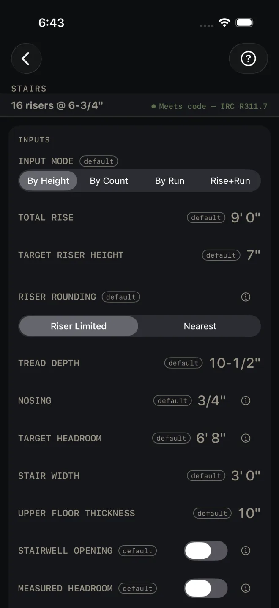
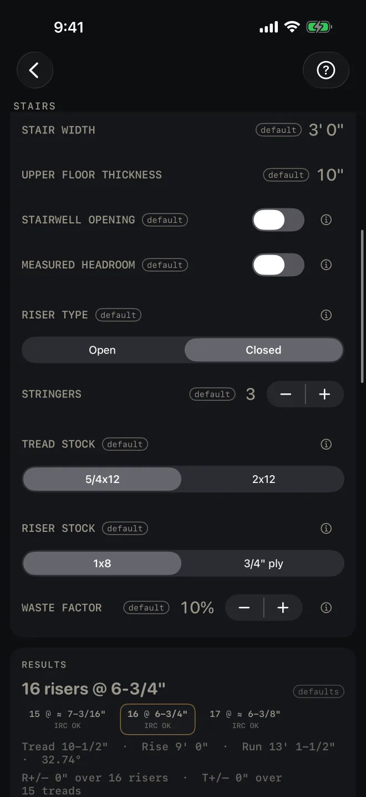
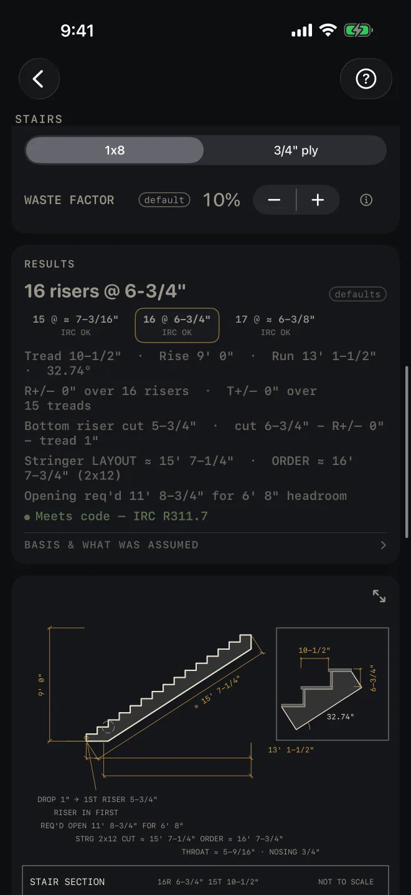
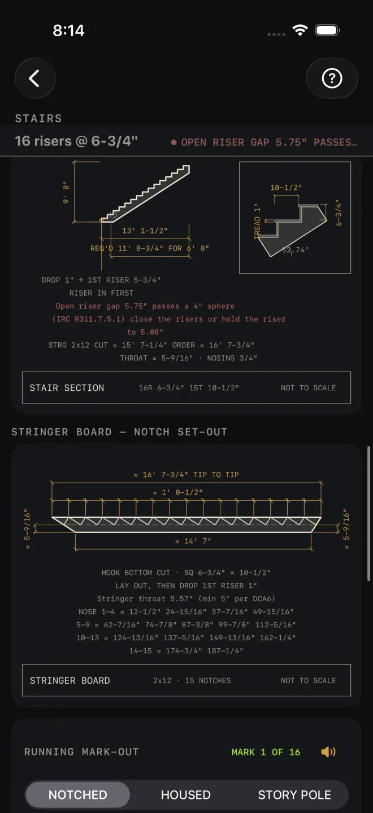

Stairs
What it's for
Laying out a straight flight of stairs. You give it the floor-to-floor rise, or the run, or both, and it gives you the riser count, the riser and tread you cut to, the stringer length to lay out and the length to order, the stairwell opening the headroom needs, a section drawing, a stringer board with every notch marked, a running mark-out tape and a material list. It checks the stair against IRC R311.7 and prints any failure in red.
Step by step
This example uses the numbers the screen opens with, so your screen matches the shots.

1 2 3 4 5- INPUT MODE — leave it on By Height. You know the rise and the riser you want. The other three modes are covered below.
- TOTAL RISE — measure plumb from the finished lower floor to the finished upper floor. If the finish floors are not down yet, add or take off their thickness first. The example is 9' 0".
- TARGET RISER HEIGHT — the riser you would like. The example is 7".
- RISER ROUNDING — the rise rarely divides evenly by your target. Riser Limited rounds the count up, so no riser comes out taller than your target. Nearest rounds to the closest whole count. That can save a riser, but the riser can come out taller than you asked for.
- TREAD DEPTH — the level run of one step. The total run is this times the number of treads. The example is 10-1/2".
- NOSING is how far the front of the tread hangs over the riser below. TARGET HEADROOM is the clear height you want over the stair, measured plumb from the sloped line along the nosings. STAIR WIDTH is the width of the flight. UPPER FLOOR THICKNESS is the thickness of the whole upper floor assembly. The opening the stair needs is worked out from it.

7 8 9 10- If the hole in the floor is already framed, turn on STAIRWELL OPENING and enter OPENING LENGTH, measured level, back from the face of the top riser. The headroom is then worked out from it. If you have taped the real clearance on site, turn on MEASURED HEADROOM and enter it. A measured figure is used for the code check ahead of a worked-out one. The example leaves both off.
- RISER TYPE — Closed, the example's setting, takes riser boards, and the material list buys them. Open leaves the gap between treads open, and the code check then measures that gap.
- STRINGERS is how many you are cutting. TREAD STOCK sets the tread thickness, which is what the bottom riser is dropped by. RISER STOCK is the thickness of the riser boards.
- WASTE FACTOR — the extra you buy over the measured quantity.
- Read the answer: 16 risers @ 6-3/4". The example passes every check. Switch RISER TYPE to Open and a red flag appears: 6-3/4" less the 1" tread leaves a 5-3/4" gap, and a 4" sphere goes through it.
The other input modes
- By Count — you choose the number of risers. RISERS replaces the riser target and the rounding choice.
- By Run — you only know the run. Enter TOTAL RUN, measured level from the foot of the stair to the face of the top riser, with TARGET RISER HEIGHT and TARGET TREAD DEPTH. There is no rise field in this mode. The rise is worked out for you.
- Rise+Run — both are fixed. Enter TOTAL RISE and TOTAL RUN. There is no tread field in this mode. The tread is the run divided by the number of treads.
Reading the results

1 2 4 5 6- The headline is the riser count and the riser height you cut to, rounded to 1/16". The defaults tag means you have not entered anything of your own yet.
- The chips show one riser fewer, the current count, and one more, each with its riser height and its verdict. Tap a chip to take that count. The screen switches to By Count. A chip past the RISERS row's range of 2 to 30 is dimmed and does nothing when tapped.
- The lines under the chips. Tread, rise, run and the incline in degrees. R+/– and T+/– are what rounding to 1/16" leaves over the whole flight. They print bold when they are not zero. Bottom riser cut is the first riser you cut. It is shorter than the rest by the tread thickness and any R+/–. Stringer LAYOUT is the length you lay out and cut. ORDER is the tip-to-tip length the board has to hold, with the board size after it. Opening req'd is the stairwell opening that gives your target headroom, nosing included.
- The check. A stair with nothing wrong reads Meets code — IRC R311.7 in green. Otherwise each failure gets its own RED LINE IN CAPITALS, with the number that failed and the code section it was checked against. There can be several at once. Fix every one.
- BASIS & WHAT WAS ASSUMED — tap it. It opens the rounding rule, how the opening was worked out, the headroom note, how the riser count was rounded, the bottom riser drop, the stringer throat, the code edition the checks use and a reminder to check your local code. If you have not given an opening or a measured headroom, the headroom note tells you to check it on site.
- The drawing is the stair in section with the same numbers on it, and one step enlarged in the corner. Pinch to zoom, drag to pan, double-tap to reset. The expand button opens it full screen. A stair that fails a check carries the failure on the drawing as well, named in red — two of them, and then a line saying how many more there are and to read the checks list. See Reading the drawing.
What clears each flag:
- Open riser gap — set RISER TYPE to Closed.
- Riser height too tall — lower TARGET RISER HEIGHT, tap the chip with one more riser, or go back to Riser Limited.
- Riser height too short — raise TARGET RISER HEIGHT, or tap the chip with one fewer riser.
- Riser variation — the rounding left over is too much for the bottom riser to take. Tap a chip with a different count.
- Tread depth — raise TREAD DEPTH, or in a run mode lengthen TOTAL RUN.
- Stair width — raise STAIR WIDTH.
- Nosing — change NOSING or deepen the tread.
- Headroom — lengthen the opening, or re-measure.
- Stringer throat — too little wood is left under the notches. The flag says what to do.

7 8 9- STRINGER BOARD — NOTCH SET-OUT is the same stringer lying flat on the horses. It shows the tip-to-tip length, the square settings, the drop on the first riser, the throat, and the running distance to every nose.
- RUNNING MARK-OUT lists those distances one at a time so you hook the tape once and mark down the board. Pick the tape: NOTCHED, HOUSED or STORY POLE.
- The speaker reads the marks aloud. See Mark-out and speak.
Below the mark-out is the notching template card. It prints one notch at true size, across more than one sheet if the tread is wider than the page. If the riser is taller than the page it prints the set-out numbers instead, and the card says so before you print. Print at 100% scale. Do not fit to page. Then comes MATERIALS: stringers, treads and riser boards, with the waste factor in the quantities. The riser row is there because the screen opens on Closed; on Open there are no riser boards to buy and the row goes.
At the bottom, CUT SHEET, the list icon at its right end, CUT LIST, SEND LIST and OPTIMIZE stay dim until you change at least one input, so a sheet made from the sample numbers never reaches a job. SAVE stays lit, but while every input is still a default a tap only answers Enter your job's numbers first and saves nothing. CUT SHEET makes a PDF with both drawings, SAVE keeps the result in History, CUT LIST puts the list on the Lock Screen, SEND LIST sends a checkable list to another phone, and OPTIMIZE sends the stringers to the Cut List Optimizer at their order length. A stringer over 24' is longer than any single stock, and a line under the buttons says so before you send.
Common mistakes
- Measuring the rise off the subfloor. TOTAL RISE is finished floor to finished floor. If finish flooring is still to go down on either level, allow for it before you enter the rise.
- Buying to the layout length. The layout length is what you mark and cut. The board has to be as long as ORDER. The material list rounds that up to a stock length.
- Cutting every riser the same. The bottom riser is shorter. Cut it to Bottom riser cut, not to the headline height.
- Taking the green line as a headroom pass. With no opening and no measured headroom, the headroom has not been checked. Open BASIS & WHAT WAS ASSUMED and read the note.